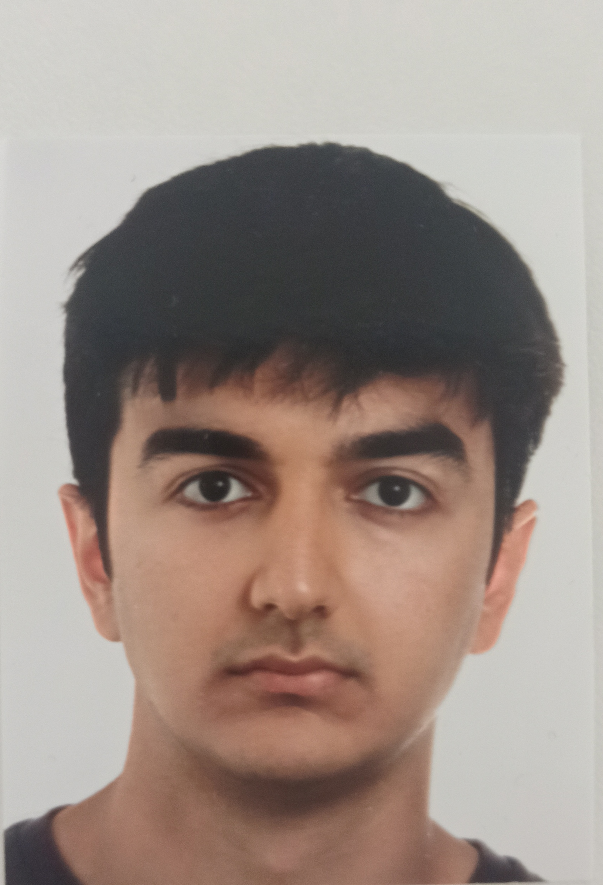

Surkhay Khanmammadli
As a dedicated professional with a passion for computer science and artificial intelligence, I blend analytical skills with a strong foundation in programming, data science, machine learning, and project management. My academic journey at Technische Hochschule Ingolstadt and Atilim University has been marked by a steadfast commitment to learning and applying my knowledge to real-world problems.